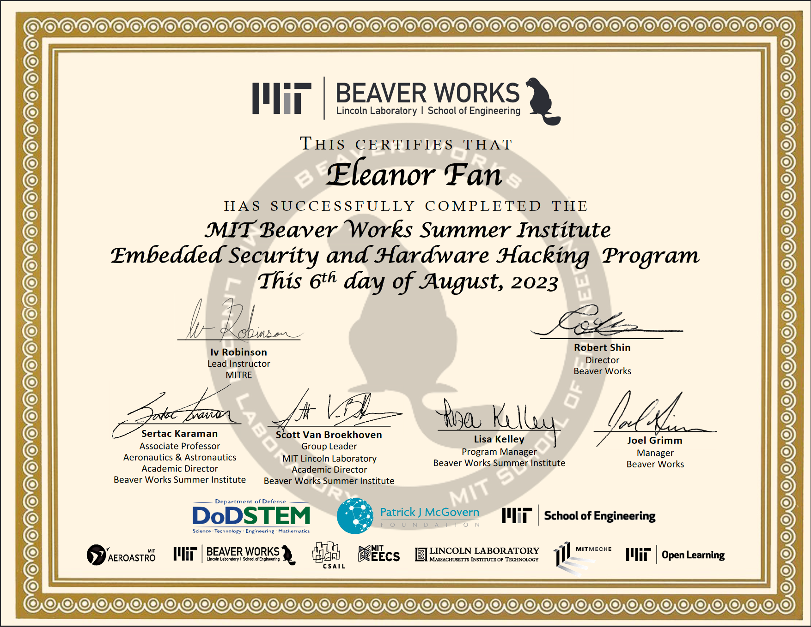

The Beaverworks Summer Institute (BWSI) was a summer program I participated in that ran for 8 hours a day, 5 days a week, and 1 month. I attended the embedded security course. During the course, I learned about different encryption techniques and ways of attacking programs (such as side-channel attacks). For the last half of the course, we programmed secure update systems for emulated embedded devices in small teams.
Through the group project, I learned how to program in C for the first time and practiced my Python (GitHub). Learning to code in C was particularly difficult for me, since the concepts of memory pointers, dereferencing, and other C features were completely new to me. As a result, I feel very proud of the C skills I attained during the program, since I even became proficient enough to take the lead in coding the C code for the project.
I really enjoyed being in BWSI because I was able to meet other people in cybersecurity. Previously, although I was interested in cybersecurity, I didn't know other people who shared my interest. Due to being part of BWSI, I grew very close with my group members and have joined a Discord server with others who were in my program.
Participating in Beaverworks also gave me an opportunity to gain more experience in cybersecurity. I think that participating in the program helped cement my interest in the field of cybersecurity by giving me hands-on experience on the implementation of security measures such as encryption in embedded systems.
